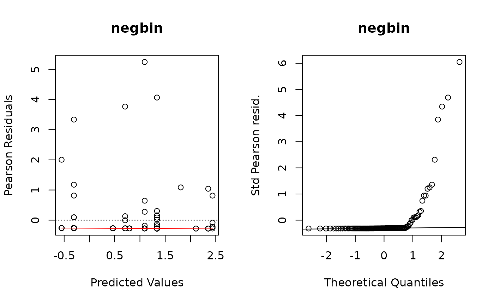

Session 5 lab exercise: loglinear regression part 2
Levi Waldron
session_lab.RmdLearning objectives
- Fit Poisson, NB, and zero-inflated loglinear models
- Perform nested deviance test for model selection
- Make diagnostic plots of loglinear models
- Visually assess multicollinearity among predictors
Load the needle-sharing dataset
suppressPackageStartupMessages({
library(tidyverse)
})
needledat <- readr::read_csv("needle_sharing.csv")
needledat2 <- needledat %>%
dplyr::filter(sex %in% c("M", "F") &
ethn %in% c("White", "AA", "Hispanic") &
!is.na(homeless)) %>%
mutate(
homeless = recode_factor(homeless, "0" = "no", "1" = "yes"),
hiv = recode_factor(
hivstat,
"0" = "negative",
"1" = "positive",
"2" = "positive"
)
)Compare the mean to the variance of the outcome variable. Calculate what fraction of the counts are zero.
meanvarzeros <- filter(needledat2,!is.na(shared_syr)) %>%
summarise(
mean = mean(shared_syr),
var = var(shared_syr),
fraczero = sum(shared_syr == 0) / n()
)
meanvarzeros## # A tibble: 1 × 3
## mean var fraczero
## <dbl> <dbl> <dbl>
## 1 3.12 113. 0.774The mean number of needle sharing events per participant is 3.12, the variance is 113, and the fraction of participants who never shared a needle is 0.774. (Note how I put computed results in the text here rather than writing in numbers manually - they will change automatically if the analysis is changed!)
Create a histogram of the outcome variable.
This was done in the lecture using base R, but let’s do it here with ggplot2. Note the filtering of complete cases only is unnecessary because ggplot does it anyways, but this gets rid of a warning (try it without filtering). Specifying the binwidth is also unnecessary, but by default geom_histogram creates histogram bins of size 2 (ie 0 and 1 in the same bin, 2 and 3 together, …)
library(ggplot2)
filter(needledat2, !is.na(shared_syr)) %>%
ggplot(aes(x = shared_syr)) +
geom_histogram(binwidth = 1)
Fit Poisson and Negative Binomial models as in the lecture, with and without zero inflation.
Negative Binomial
##
## Attaching package: 'MASS'## The following object is masked from 'package:dplyr':
##
## select
fit.negbin <- glm.nb(shared_syr ~ sex + ethn + homeless,
data = needledat2)Zero-inflated Poisson
The |1 creates an intercept-only zero inflation model.
Substitute it with a variable name to add that variable to the count
model, and use regular model formula syntax to create any zero-inflation
logistic regression model you want. Or omit the | for a
full zero-inflation model.
## Classes and Methods for R originally developed in the
## Political Science Computational Laboratory
## Department of Political Science
## Stanford University (2002-2015),
## by and under the direction of Simon Jackman.
## hurdle and zeroinfl functions by Achim Zeileis.
fit.ZIpoisfull <- zeroinfl(shared_syr ~ sex + ethn + homeless,
data = needledat2,
dist = "poisson")Intercept-only ZI Poisson model
fit.ZIpois <- zeroinfl(shared_syr ~ sex + ethn + homeless | 1,
data = needledat2,
dist = "poisson")Intercept-only ZI Negative Binomial model
fit.ZInegbin <- zeroinfl(shared_syr ~ sex + ethn + homeless | 1,
data = needledat2,
dist = "negbin")Make a boxplot of needle sharing by homelessness (and other predictors)
ggplot(needledat2, aes(x = ethn, y = shared_syr)) +
geom_boxplot(varwidth = TRUE)## Warning: Removed 2 rows containing non-finite outside the scale range
## (`stat_boxplot()`).Assess whether there may be multicollinearity among the predictors
This uses model.matrix as a trick to produce a numeric
matrix containing numeric and dummy variables, that can be used for
calculating correlations and plotting heatmaps or dendrograms. First,
assessing only three variables. Note, the first column of
mm is the intercept, which must be removed.
mm <- model.matrix(~ sex + ethn + homeless, data = needledat2)
plot(hclust(as.dist(1 - cor(mm[, -1]))))Now embed the dendrogram in a heatmap, which may be more or less
informative, but worth trying. Here I use Euclidian distance for rows
(patients) because some rows have zero variance and produce an error
when attempting to calculate correlation, but use Pearson correlation
for columns. The choice of distance metric makes this clustering look
very different. See ?pheatmap for other distance metric
options. There are also other heatmap packages, but
?pheatmap makes it easy to produce a basic heatmap.
library(pheatmap)
pheatmap(mm[, -1],
clustering_distance_cols = "correlation",
clustering_distance_rows = "euclidean")Now repeat but assessing all variables, removing id
because it’s just an identifier, and shsyryn because it has
zero variance.
mm <- model.matrix(~ . - id - shsyryn, data = needledat2)[, -1] #[, -1] gets rid of intercept
plot(hclust(as.dist(1 - cor(mm))))Use chi-square nested deviance tests to assess which model seems to fit best.
I want to calculate the log-likelihood from each model. The simplest
way is to call the logLik function one at a time:
logLik(fit.pois)## 'log Lik.' -730.0133 (df=5)
logLik(fit.negbin)## 'log Lik.' -147.1277 (df=6)
logLik(fit.ZIpois)## 'log Lik.' -303.0276 (df=6)
logLik(fit.ZInegbin)## 'log Lik.' -146.7677 (df=7)Just to demonstrate a fancier way that could be used on many models, I’ll create a list of model objects:
listoffits <-
list(
pois = fit.pois,
negbin = fit.negbin,
ZIpois = fit.ZIpois,
ZInegbin = fit.ZInegbin
)Then demonstrate how the lapply (also related functions
like sapply) can be used to implicitly loop over elements
of a list, to do exactly the same thing:
lapply(listoffits, logLik)## $pois
## 'log Lik.' -730.0133 (df=5)
##
## $negbin
## 'log Lik.' -147.1277 (df=6)
##
## $ZIpois
## 'log Lik.' -303.0276 (df=6)
##
## $ZInegbin
## 'log Lik.' -146.7677 (df=7)OK now to actually answer the question. Just to get an idea of how big a difference in would be statistically significant on one difference of degrees of freedom:
qchisq(0.95, df = 1)## [1] 3.841459Or two degrees of freedom:
qchisq(0.95, df = 2)## [1] 5.991465All the differences in double log-likelihoods above are much larger (in the hundreds) than these critical significance values, except for the difference between Negative Binomial and zero-inflated negative binomial models. So it doesn’t look like zero inflation helped the Negative Binomial distribution model, but it helped the Poisson model, and the Negative Binomial model fits better than the Poisson model.
Create residual deviance plots using the functions defined in the lecture.
These were the (base graphics) functions defined to create the first two panels of residuals plots for all of these types of models.
plotpanel1 <- function(fit, ...) {
plot(
x = predict(fit),
y = residuals(fit, type = "pearson"),
xlab = "Predicted Values",
ylab = "Pearson Residuals",
...
)
abline(h = 0, lty = 3)
lines(lowess(x = predict(fit), y = resid(fit, type = "pearson")),
col = "red")
}
plotpanel2 <- function(fit, ...) {
resids <- scale(residuals(fit, type = "pearson"))
qqnorm(resids, ylab = "Std Pearson resid.", ...)
qqline(resids)
}Let’s make these plots. As a shortcut, remember that list of models?
I’m going to use an explicit for loop this time instead of
lapply so that I can use the vector names as plot
titles.
Although we saw some evidence from the chi-square test that the Negative Binomial distribution fit better than the Poisson distribution (not surprising since these data are very over-dispersed), these diagnostic plots show the Negative Binomial distribution still does not fit well at all. I would take any interpretation of the coefficients of these models with plenty of skepticism. But this dataset is tricky and I’m not sure offhand of a good model to fit it.
Note, the line par(mfrow=c(1, 2)) only works for base
graphics (not ggplot2), and creates a 1 row by 2 column plot panel.
par(mfrow=c(1, 2))
for (i in seq_along(listoffits)){
plotpanel1(listoffits[[i]], main = names(listoffits)[i])
plotpanel2(listoffits[[i]], main = names(listoffits)[i])
}
Plot predicted and observed counts
Here is a data.frame that we can use to make histograms,
density plots, etc.
preds <- data.frame(observed = fit.pois$y,
poisson = predict(fit.pois),
negbin = predict(fit.negbin),
ZIpois = predict(fit.ZIpois),
ZInegbin = predict(fit.ZInegbin))Just to help with pivoting, let’s pivot this into long-format:
preds.long <- pivot_longer(preds, everything())What did this do?
summary(preds.long)## name value
## Length:575 Min. :-0.5506
## Class :character 1st Qu.: 0.0000
## Mode :character Median : 1.1446
## Mean : 2.3125
## 3rd Qu.: 2.5691
## Max. :60.0000Boxplot
ggplot(preds.long, aes(x = name, y = value)) + geom_boxplot()Histogram with facet_wrap
ggplot(preds.long, aes(x = value)) +
facet_wrap(~name) +
geom_histogram(binwidth = 1)We can see that none of the models come close to modeling the extreme observed counts of 30+. In reality, these might require a more complex mixture model: for example a mixture of zero-inflation plus two different count distributions, one with a much higher mean. This is beyond the scope of the course, but it is possible to fit more complex mixture models that could fit this dataset better.